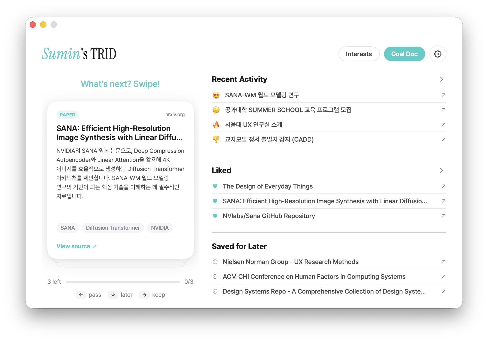
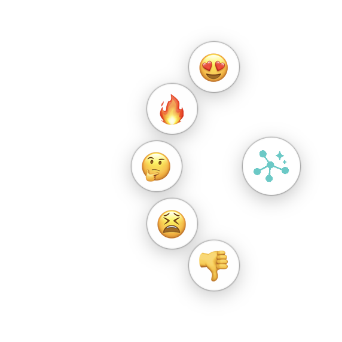
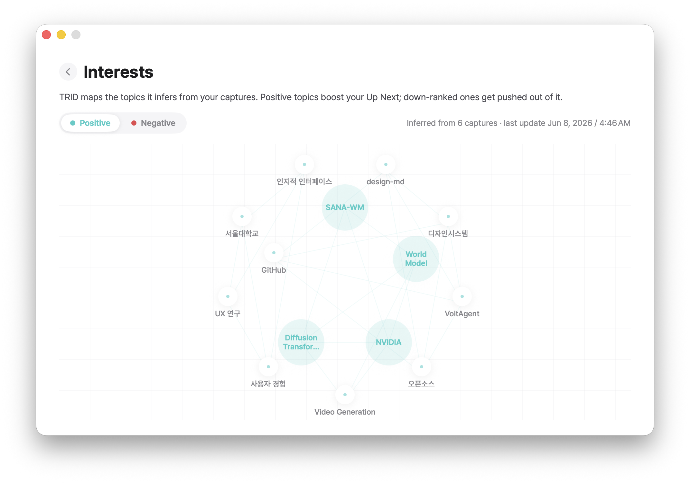
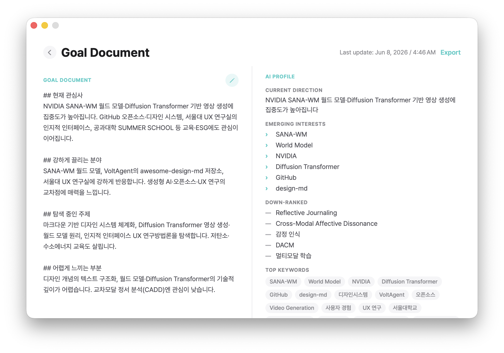
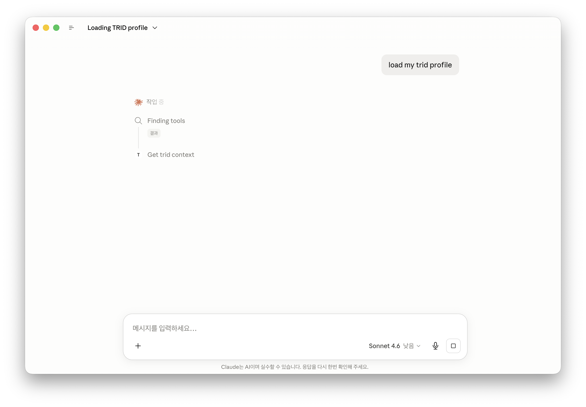

TRID
Your goals are hard to put into words, but your taste shows as you browse. TRID catches it.
Press a single emotion button. It reads the moment, maps your interests, and quietly composes a sense of direction for you.
See it in action
A glance at your TRID

Core concept · Emotion buttons
While you explore, just press a button.
Tap an emotion and the agent reads it and maps your taste.
Positive reactions build your interests.
Negative ones stay separate and never pollute your recommendations.

Interest graph
TRID maps the topics it infers from your captures.
Positive ones boost your Up Next.
Down-ranked ones drop out of it.

Goal Document · AI Profile
The more you react, the more it fills in on its own.
The left is an editable document, the right is the profile your AI reads.
Export both in one file.

What sets it apart
Let an AI like Claude read the interest summary TRID assembled.
No more re-explaining yourself every time.
Export it as a file, pull it into Claude Code, or just tell Claude Desktop to load my TRID profile.

Get started
A macOS app that gathers your scattered signals and shapes them into a direction.